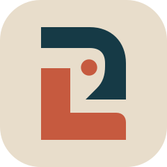
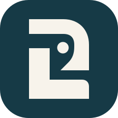
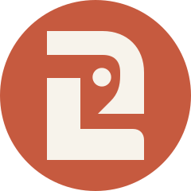
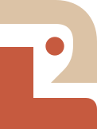

PuroLar
Variações do símbolo aprovado








Areia & terracota
A combinação da segunda referência, aplicada ao mesmo desenho aprovado. O espaço entre as formas é transparente.
#DCC3A6#C65A3F
Descarregar SVG transparente